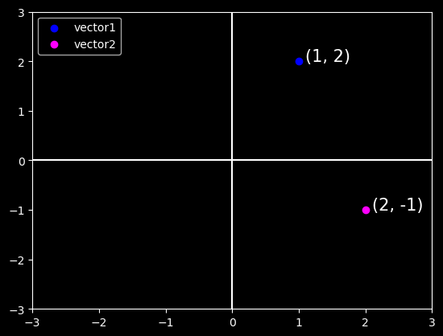

An (n, d) matrix can be interpreted as a collection of n vectors in d-dimensional space.
Geometry of Vectors
Vectors have two common geometric interpretations:
Vectors as Points in Feature Space: In this interpretation, we consider vectors as points in a space with a fixed reference point called the origin.
Vectors as Displacement: In this interpretation, we consider vectors as displacements between points in space.
1. Vectors as Points in Feature Space
Given a vector, the first interpretation that we should give it is as a point in space.
In two or three dimensions, we can visualize these points by using the components of the vectors to define the location of the points in space compared to a fixed reference called the origin. This can be seen in the figure below.
This geometric point of view allows us to consider the problem on a more abstract level. No longer faced with some insurmountable seeming problem like classifying pictures as either cats or dogs, we can start considering tasks abstractly as collections of points in space and picturing the task as discovering how to separate two distinct clusters of points.
import pandas as pd from matplotlib import pyplot as pltplt.style.use('dark_background')plt.xlim(-3, 3)plt.ylim(-3, 3)vector1 = [1, 2]vector2 = [2, -1]displacement =0.1# Plotting vector 1plt.scatter(x=vector1[0], y=vector1[1], color='blue');plt.text(x=vector1[0]+displacement, y=vector1[1], \ s=f"(%s, %s)"% (vector1[0], vector1[1]), size=15);# Plotting vector 2plt.scatter(x=vector2[0], y=vector2[1], color='magenta');plt.text(x=vector2[0]+displacement, y=vector2[1], \ s=f"(%s, %s)"% (vector2[0], vector2[1]), size=15);# Plotting the x and y axesplt.axhline(0, color='white');plt.axvline(0, color='white');# Plotting the legendplt.legend(['vector1', 'vector2'], loc='upper left');

2. Vectors as directions in feature space
In parallel, there is a second point of view that people often take of vectors: as directions in space. Not only can we think of the vector \(\textbf{v} = [3, 2]^{T}\) as the location \(3\) units to the right and \(2\) units up from the origin, we can also think of it as the direction itself to take \(3\) steps to the right and \(2\) steps up. In this way, we consider all the vectors in figure below the same.
One of the benefits of this shift is that we can make visual sense of the act of vector addition. In particular, we follow the directions given by one vector, and then follow the directions given by the other, as seen below:
Vector subtraction has a similar interpretation. By considering the identity that \(\mathbf{u} = \mathbf{v} + (\mathbf{u} - \mathbf{v})\), we see that the vector \(\mathbf{u} - \mathbf{v}\) is the direction that takes us from the point \(\mathbf{v}\) to the point \(\mathbf{u}\).
Some of the most useful operators in linear algebra are norms. A norm is a function \(\| \cdot \|\) that maps a vector to a scalar.
Informally, the norm of a vector tells us magnitude or length of the vector.
For instance, the \(l_2\) norm measures the euclidean length of a vector. That is, \(l_2\) norm measures the euclidean distance of a vector from the origin \((0, 0)\).
x = pd.Series(vector1)l2_norm = (x**2).sum()**(1/2)l2_norm
2.23606797749979
The \(l_1\) norm is also common and the associated measure is called the Manhattan distance. By definition, the \(l_1\) norm sums the absolute values of a vectors elements:
One of the most fundamental operations in linear algebra (and all of data science and machine learning) is the dot product.
Given two vectors \(\textbf{x}, \textbf{y} \in \mathbb{R}^d\), their dot product\(\textbf{x}^{\top} \textbf{y}\) (also known as inner product\(\langle \textbf{x}, \textbf{y} \rangle\)) is a sum over the products of the elements at the same position:
Equivalently, we can calculate the dot product of two vectors by performing an elementwise multiplication followed by a sum:
sum(x * y)
32
Dot products are useful in a wide range of contexts. For example, given some set of values, denoted by a vector $ ^{n} $ , and a set of weights, denoted by \(\mathbf{x} \in \mathbb{R}^{n}\), the weighted sum of the values in \(\mathbf{x}\) according to the weights \(\mathbf{w}\) could be expressed as the dot product \(\mathbf{x}^\top \mathbf{w}\). When the weights are nonnegative and sum to \(1\), i.e., \((\sum_{i=1}^n w_i = 1)\), the dot product expresses a weighted average. After normalizing two vectors to have unit length, the dot products express the cosine of the angle between them. Later in this section, we will formally introduce this notion of length.
Dot Products and Angles
If we take two column vectors \(\mathbf{u}\) and \(\mathbf{v}\), we can form their dot product by computing:
The vector \(\mathbf{v}\) is length \(r\) and runs parallel to the \(x\)-axis, and the vector \(\mathbf{w}\) is of length \(s\) and at angle \(\theta\) with the \(x\)-axis.
If we compute the dot product of these two vectors, we see that
We will not use it right now, but it is useful to know that we will refer to vectors for which the angle is \(\pi/2\)(or equivalently \(90^{\circ}\)) as being orthogonal.
By examining the equation above, we see that this happens when \(\theta = \pi/2\), which is the same thing as \(cos(\theta) = 0\).
The only way this can happen is if the dot product itself is zero, and two vectors are orthogonal if and only if \(\mathbf{v}\cdot\mathbf{w} = 0\).
This will prove to be a helpful formula when understanding objects geometrically.
It is reasonable to ask: why is computing the angle useful? Consider the problem of classifying text data. We might want the topic or sentiment in the text to not change if we write twice as long of document that says the same thing.
For some encoding (such as counting the number of occurrences of words in some vocabulary), this corresponds to a doubling of the vector encoding the document, so again we can use the angle.
v = pd.Series([0, 2])w = pd.Series([2, 0])v.dot(w)
0
from math import acosdef l2_norm(vec):return (vec**2).sum()**(1/2)v = pd.Series([0, 2])w = pd.Series([2, 0])v.dot(w) / (l2_norm(v) * l2_norm(w))
0.0
from math import acos, pitheta = acos(v.dot(w) / (l2_norm(v) * l2_norm(w)))theta == pi /2
True
Cosine Similarity/Distance
In ML contexts where the angle is employed to measure the closeness of two vectors, practitioners adopt the term cosine similarity to refer to the portion
The cosine takes a maximum value of \(1\) when the two vectors point in the same direction, a minimum value of \(-1\) when they point in opposite directions, and a value of \(0\) when the two vectors are orthogonal.
Note that cosine similarity can be converted to cosine distance by subtracting it from \(1\) and dividing by 2.
where \(\text{Cosine Similarity} = \frac{\mathbf{v}\cdot\mathbf{w}}{\|\mathbf{v}\|\|\mathbf{w}\|}\)
Cosine distance is a very useful alternative to Euclidean distance for data where the absolute magnitude of the features is not particularly meaningful, which is a very common scenario in practice.
from random import uniformimport pandas as pdimport seaborn as snsdf = pd.DataFrame()df['cosine similarity'] = pd.Series([uniform(-1, 1) for i inrange(100)])df['cosine distance'] = (1- df['cosine similarity'])/2ax = sns.scatterplot(data=df, x='cosine similarity', y='cosine distance');ax.set(title='Cosine Similarity vs. Cosine Distance')plt.grid()
Note that cosine similarity can be negative, which means that the angle is greater than \(90^{\circ}\), i.e., the vectors point in opposite directions.
In addition to working with vectors, another key object that you must understand to go far in linear algebra is the hyperplane, a generalization to higher dimensions of a line (two dimensions) or of a plane (three dimensions). In an -dimensional vector space, a hyperplane has dimensions and divides the space into two half-spaces.
Lets start with an example. Suppose that we have a column vector \(\mathbf{w}=[2,1]^\top\). We want to know, what are the points \(\mathbf{v}\) with \(\mathbf{w}\cdot\mathbf{v} = 1\)? We can define \(\mathbf{v} = [x, y]\)
\[ \mathbf{w}\cdot\mathbf{v} = 1\]
\[ [2, 1]^\top \cdot [x, y] = 1\]
\[ 2x + y = 1\]
\[ y = -2x + 1\]
Recall that the equation for a line is \(y = mx + b\). Therefore, in the equations above, we have defined a line where the slope (\(m\)) is \(-2\) and the intercept (\(b\)) is \(1\).
In this way, we have found a way to cut our space into two halves, where all the points on one side have dot product below a threshold, and the other side above as we see below:
The story in higher dimension is much the same. If we now take \(\mathbf{w} = [1,2,3]^\top\) and ask about the points in three dimensions with \(\mathbf{w}\cdot\mathbf{v} = 1\), we obtain a plane at right angles to the given vector \(\mathbf{w}\). The two inequalities again define the two sides of the plane as is shown below:
While our ability to visualize runs out at this point, nothing stops us from doing this in tens, hundreds, or billions of dimensions. This occurs often when thinking about machine learned models.
For instance, we can understand linear classification models, as methods to find hyperplanes that separate the different target classes. In this context, such hyperplanes are often referred to as decision planes. The majority of deep learned classification models end with a linear layer fed into a softmax, so one can interpret the role of the deep neural network to be to find a non-linear embedding such that the target classes can be separated cleanly by hyperplanes.